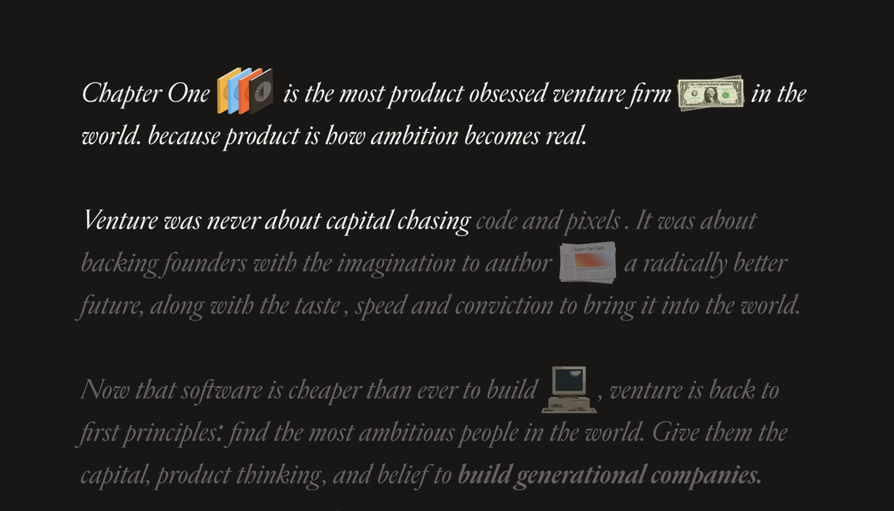

Chapter One 宣言段。样本：chapterone.com
2026-08-17 · 打开这页，下面那段话就是笔记
Chapter One is the most product obsessed venture firm in the world. because product is how ambition becomes real.
Venture was never about capital chasing code and pixels. It was about backing founders with the imagination to author a radically better future, along with the taste, speed and conviction to bring it into the world.
Now that software is cheaper than ever to build , venture is back to first principles: find the most ambitious people in the world. Give them the capital, product thinking, and belief to build generational companies.
暗底、斜体、奶油色的字。书、钞票、报纸、旧电脑不是贴在旁边的装饰，它们坐在句子里，占一个词那么宽，跟左右的字齐肩。读到哪，哪一段才亮。没读到的句子不是换了一种灰，是同一支奶油色停在四分之一透明。
原站字体叫 Edict Display Italic。这页用免费的 Instrument Serif Italic 顶上，骨架一样：大斜体、1.5 倍行高、0.8px 字距、栏宽大约七成。

每个词包在 <span class="op__word"> 里。物体也是一个 span，只是里面放图。CSS 把它变成 inline-block，高度大约 1.65 个 em，垂直居中。于是图跟大写的 C 一样高，跟着换行走，不会自己掉到下一行当插图。
钞票稍扁，高度收到 1.3em。书厚一点，单独给一个盒子，宽高比锁死，里面叠四张图。
上面四张单独看是书脊。塞进同一个词盒子里，每张宽 43%，左边依次错开 0%、19%、38%、57%。你看见的那一摞，是四张绝对定位，不是一张拼好的图。
原站用滚动把每个词的透明度从 0.25 推到 1。你截图里第二、第三段发灰，不是设计师另选了一支灰。同一支 #F1F0ED，乘上 25%。所以后面的句子像还在纸里，读到才浮出来。
这页上面那段已经接上了。滚它，词会亮。原站还用了更长的钉住滚动；要做宣言页，这套「读到才亮」就够用。
底是 #181515，不是纯黑。字是 #F1F0ED，不是纯白。差那一点，暗室才像油墨，不像显示器。
#181515。长句用斜体衬线，字号 clamp(24px, 2.7vw, 40px)，行高 1.5，字距 0.8px，栏宽约 70%。height: 1.65em，vertical-align: middle，左右留 0.35em。opacity: 0.25。词的中线越过视口中线，就改成 1。.op__text {
width: 70%;
margin: 0 auto;
font-family: "Edict Display", "Instrument Serif", Georgia, serif;
font-style: italic;
font-size: clamp(24px, 2.7vw, 40px);
line-height: 1.5;
letter-spacing: 0.8px;
color: #F1F0ED;
}
.op__word { opacity: 0.25; }
.op__img { display: inline-block; vertical-align: middle; margin: 0 0.35em; }
.op__img img { height: 1.65em; width: auto; }
.op__books { position: relative; height: 1.68em; aspect-ratio: 1438 / 1225; }
.op__books img { position: absolute; width: 43.185%; height: auto; }
原站还把每个词拆开给滚动时间轴。你要做自己的宣言，先让图坐进句子里。钉住滚动是第二台机器，不是这套味道的来源。